Module 2 Data Visualization with R Using ggplot2
2.1 Introduction
Data viz tools summarize data in ways that people unfamiliar with statistics can easily interpret and understand.
In this module, we will learn how to create common data visualizations. The choice of viz is usually determined by whether we’re looking at a categorical or quantitative variable. Discrete variables may be viewed as either categorical or quantitative depending on the context.
We’ll be using functions from ggplot2 to create visualizations. ggplot2 is included in the tidyverse package.
We’ll use the dataset ClassDataPrevious.csv as an example.
2.2 Visualizations with a Single Categorical Variable
2.2.1 Frequency Tables
Frequency tables are a common tool to summarize categorical variables, giving us the number of observations, or counts, that belong to a categorical variable. These tables are created through the table() function.
Number of students in each year in our data; factoring first:
Data$Year<-factor(Data$Year, levels = c("First","Second","Third","Fourth"))
mytab<-table(Data$Year)
mytab##
## First Second Third Fourth
## 83 139 46 30We can report these numbers using proportions instead of counts using prop.table()
##
## First Second Third Fourth
## 0.2785235 0.4664430 0.1543624 0.1006711Or percentages by multiplying by 100, rounded to 2 decimal places:
##
## First Second Third Fourth
## 27.85 46.64 15.44 10.072.2.2 Bar Charts
Bar charts are a simple way to visualize data, and can be viewed as a visual representation of frequency tables. To create a bar chart for the years of a these students, we use:
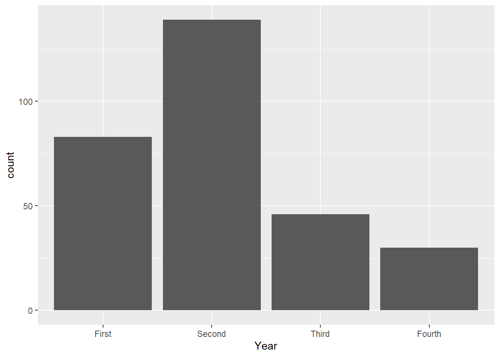
We can read the number of students who are first, second, third, and fourth years by reading off the corresponding value on the vertical axis.
From these two lines of code, we can see the basic structure of visualizations with the ggplot() function:
- Supply
ggplot()function with dataframe, and the x- and y- vars via theaes()function. End line with+and go to next line - Specify graph type we want to create (called
geoms) for a bar chart, this isgeom_bar().
These two layers of code must be supplied for all data visualizations with ggplot().
Additional layers may be added. e.g. we can change the orientation of the bar chart:
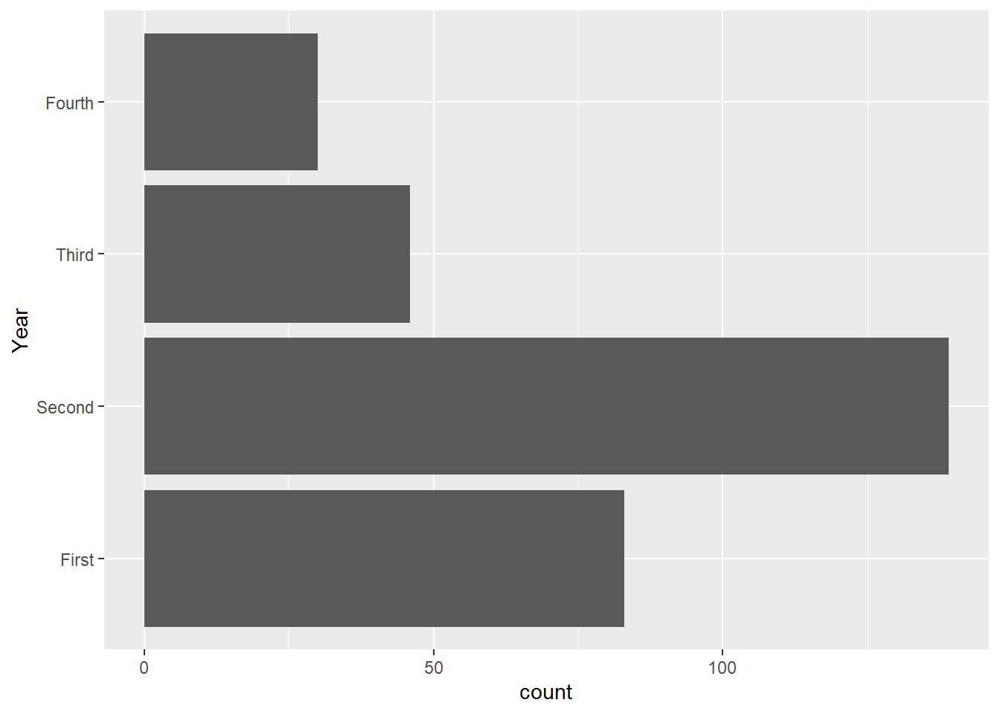
It is recommended that each layer is typed on a new line. Like pipes, you need a + to add another layer below.
Change colors of bars:
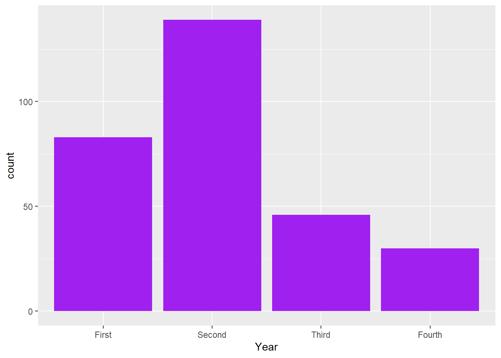
To change outline of bars:
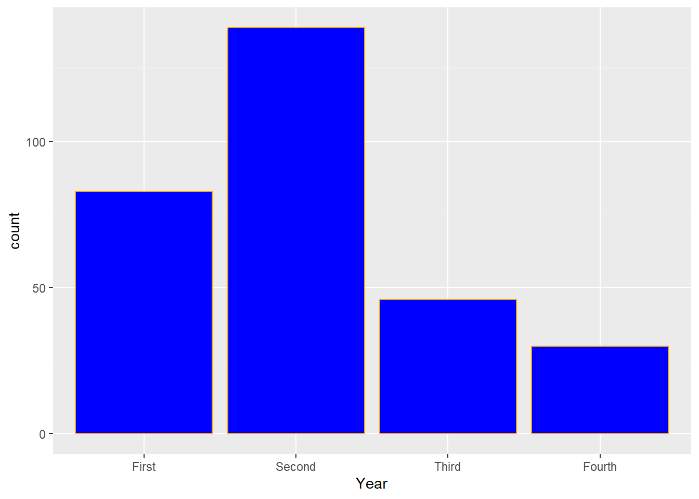
2.2.2.1 Customize Title and Labels of Axes in Bar Charts
To change orientatino of labels on x axis we add extra layer called theme. This will be useful when we have many classes and/or labels with long names.
To rotate labels on x-axis 90 degrees
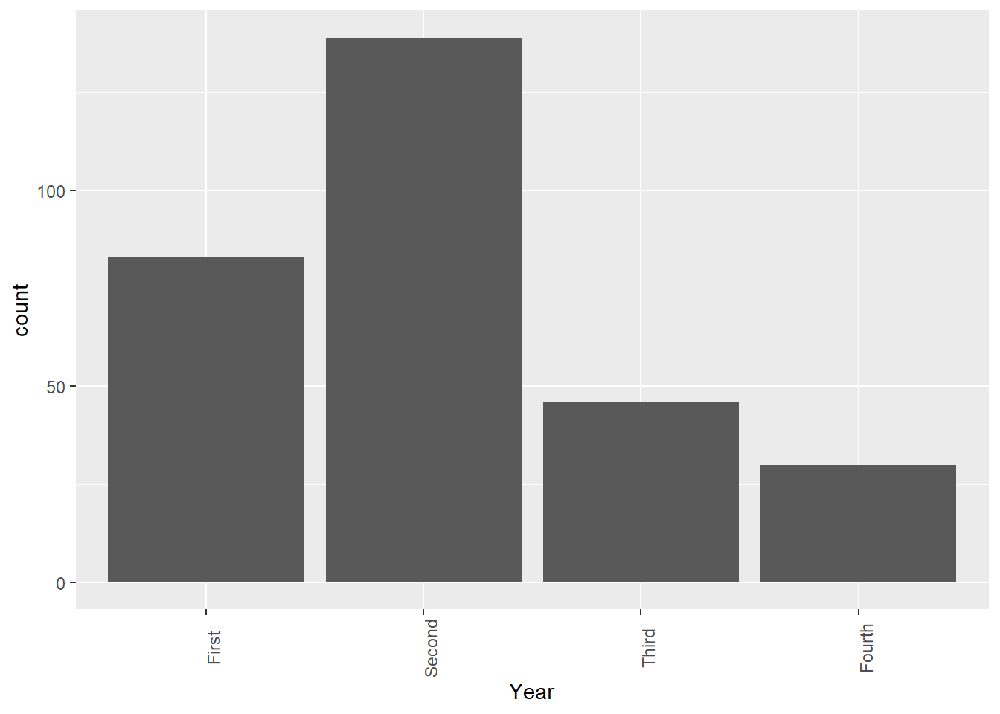
As we create more visualizations, it is good practice to give good axis titles and chart titles. To do this we use labs():
ggplot(Data, aes(x=Year))+
geom_bar()+
theme(axis.text.x = element_text(angle = 90))+
labs(x="Year", y="Number of Students", title="Dist of Years")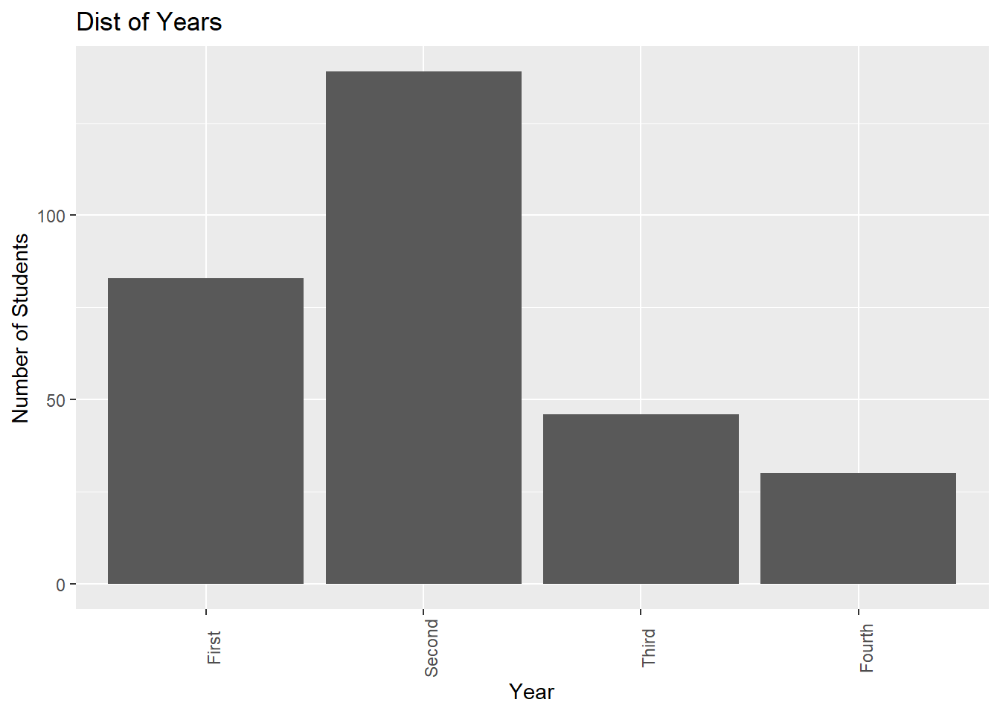
Adjust the position of the title, center justify via `theme
ggplot(Data, aes(x=Year))+
geom_bar()+
theme(axis.text.x = element_text(angle = 90)
,plot.title = element_text(hjust=0.5))+
labs(x="Year", y="Number of Students", title="Dist of Years")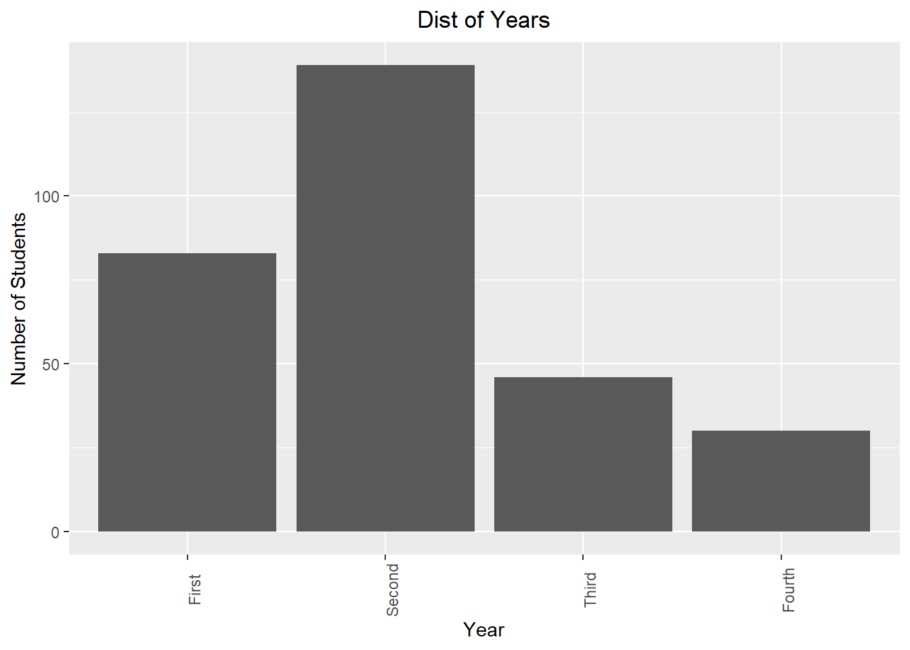
2.2.2.2 Create a Bar Chart using Proportions
Some steps involved in creating a bar chart with proportions rather than counts. First, create new dataframe, where each row is a year, then add proportion of each year into new column
Here’s what the code is doing, line by line
- Create new data from called
newDatafromData, - and then groups the observations by
Year, - and then counts the number of observations in each
Yearand stores these values in a vector calledCounts, - and then creates a new vector called
Percentby using the mathematical operations as specified inmutate().Percentis added tonewData.
Let’s take a look at newData:
## # A tibble: 4 × 3
## Year Counts Percent
## <fct> <int> <dbl>
## 1 First 83 0.279
## 2 Second 139 0.466
## 3 Third 46 0.154
## 4 Fourth 30 0.101Now we can create a bar chart using proportions:
ggplot(newData,aes(x=Year,y=Percent))+
geom_bar(stat = "identity")+
theme(axis.text.x = element_text(angle=90),
plot.title = element_text(hjust=0.5))+
labs(x="Year",y="Percentage of Students",title = "Dist of Years")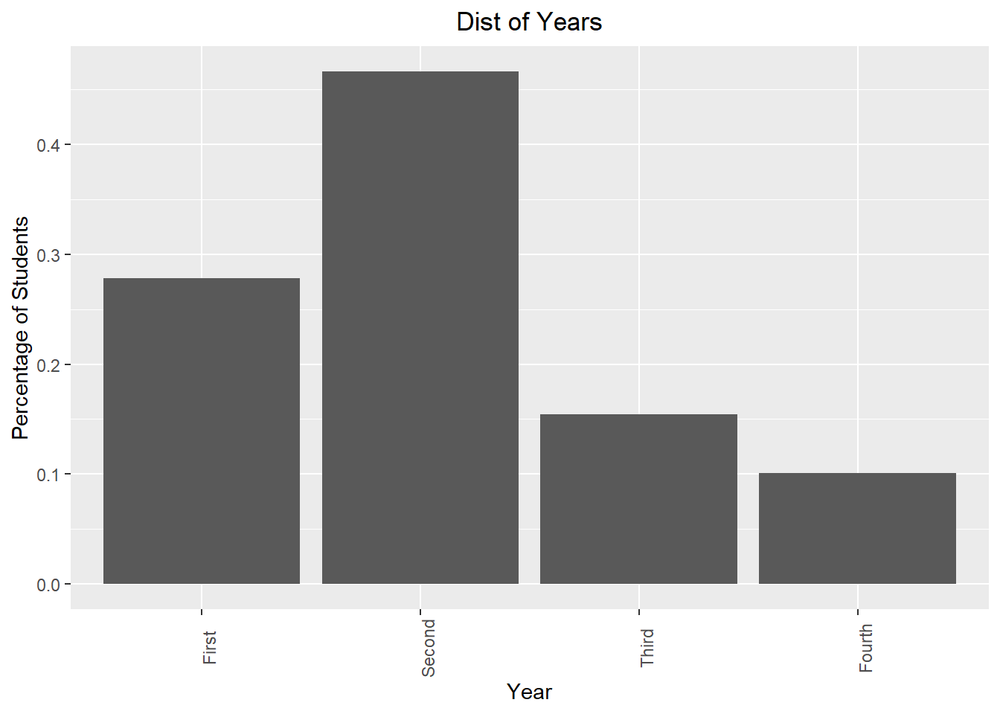
Note the following:
- In first layer we use
newDatainstead of the old data frame. Inaes()we specified a y-var, which we want to bePercent. - In second layer, we specified
stat="identity"insidegeom_bar().
2.3 Visualizations with a Single Quantitative Variable
2.3.1 5 Number Summary
The summary() function, when applied to a quantitative variable, produces the 5 Number Summary: the minimum, first quartile (25th percentile), median (50th percentile), the mean, the third quartile (75th percentile), and the maximum. For example, to obtain the five number summary of the ages of these students:
## Min. 1st Qu. Median Mean 3rd Qu. Max.
## 18.00 19.00 19.00 19.57 20.00 51.00Average is 19.57 years old. Notice the first quartile and median are both 19 years old, which means at least a quarter of the observations are 19 years old. Also not the max of 51 years old, so we have a student who is quite a lot older than the rest.
2.3.2 Boxplots
A boxplot is a graphical representation fo the 5 number summary. To create a generic boxplot, use ggplot() with a layer specifying geom_boxplot():
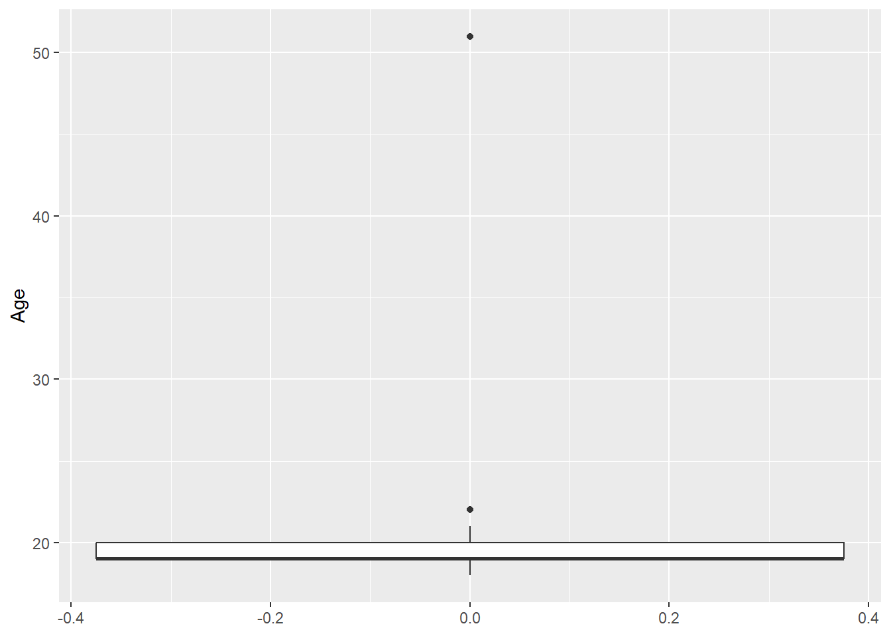
Note we are still using the same structure when creating data visualizations with ggplot().
- supply
ggplot()with dataframe, x- and or y-variables viaaes()function. End line with+ - next line specify graph type, in this case
geom_boxplot().
Notice there are outliers (observations that are a lot older or younger) that are denoted by the dots. One is the 51 year old, and 22 year olds are deemed to be outliers. The rule being used is the \(1.5\times IQR\) rule.
Similar to bar charts, we can change the orientation of boxplots by adding an additional layer as before, can also change colors:
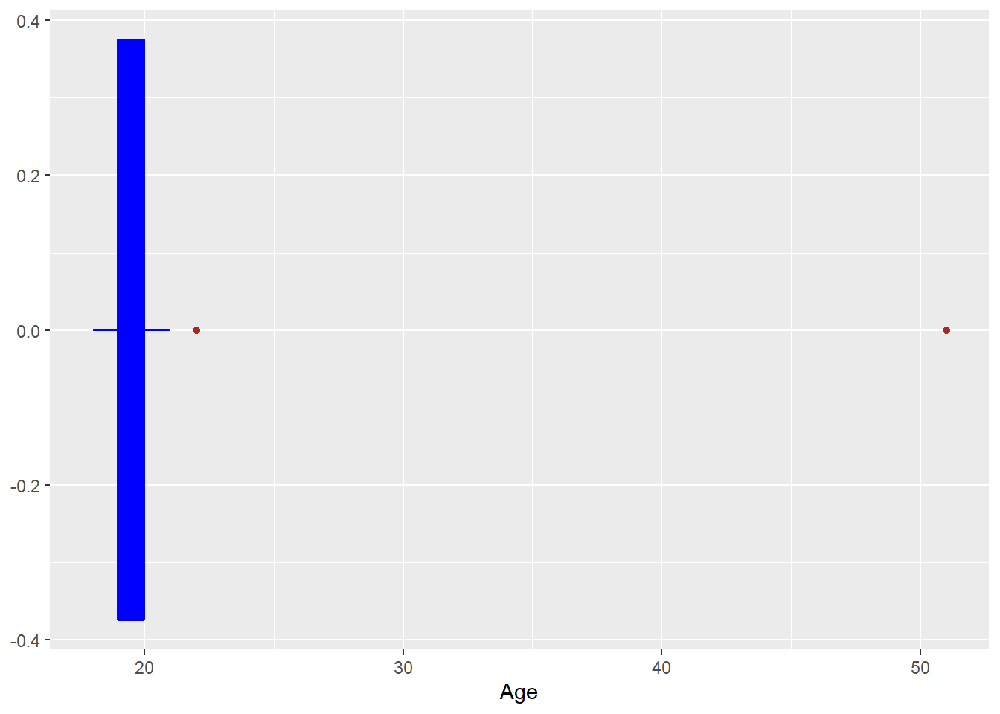
2.3.3 Histograms
Histogram displays number of observations within each bin on the x-axis.
## `stat_bin()` using `bins = 30`. Pick better
## value with `binwidth`.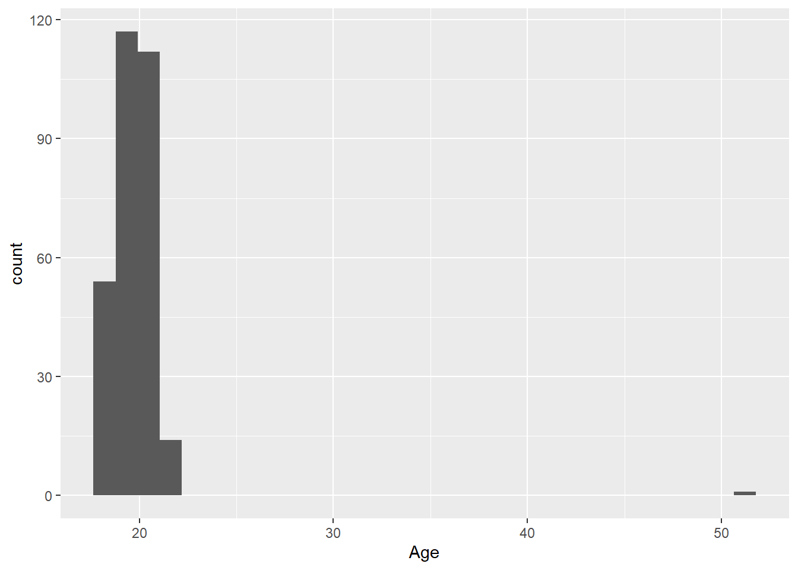
Note warning displayed when creating basic histogram, use binwidth arg within geom_histogram(). Try binwidth=1 for now, which gives us a width of 1 unit for each bin.
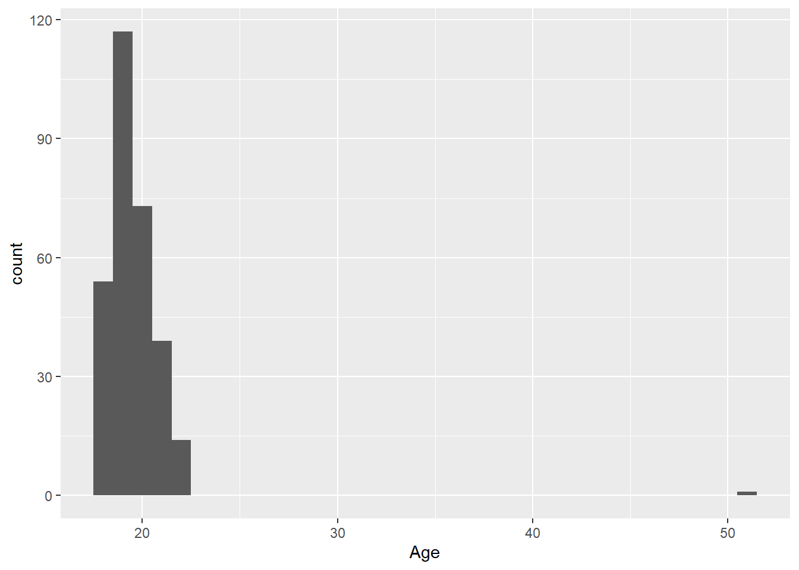
The ages of the students are mostly young, with 19 and 20 year olds being the most commonly occuring.
A well-known drawback of histograms is that the width of the bins can drastically affect the visual. Change binwidth to 2 to see:
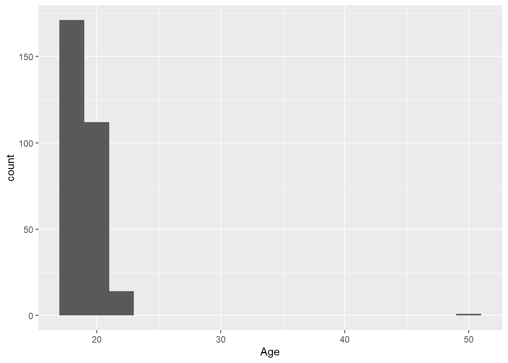
Each bar contains two ages now: the first contains 18 and 19 year olds. Notice how the shape has been changed? No good…
2.3.4 Density Plots
Density plots are similar to histograms where the plot attempts to use a smooth mathematical function to approximate the shape of the histogram, is unaffected by binwidth:
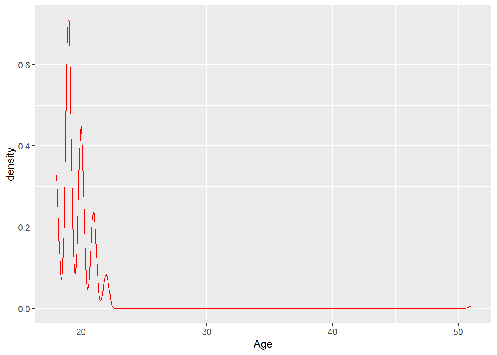
Here it is easyt o see that 19 and 20 year olds are the most common ages in this data. Be careful interpreting values on the vertical axis: these do not represent proportions. A characteristic of density plots is that the area under the plot is always one.
2.4 Bivariate Visualizations
Bivariate visualizations help show the relationship between two variables.
We will be using a new dataset as an example, so we’ll clear the environment.
Use dataset gapminder from gapminder package.
Take a look at gapminder dataset:
## # A tibble: 6 × 6
## country continent year lifeExp pop gdpPercap
## <fct> <fct> <int> <dbl> <int> <dbl>
## 1 Afghanistan Asia 1952 28.8 8425333 779.
## 2 Afghanistan Asia 1957 30.3 9240934 821.
## 3 Afghanistan Asia 1962 32.0 10267083 853.
## 4 Afghanistan Asia 1967 34.0 11537966 836.
## 5 Afghanistan Asia 1972 36.1 13079460 740.
## 6 Afghanistan Asia 1977 38.4 14880372 786.Variables are:
1. country
2. continent
3. year from 1952 to 2007 in increments of 5 years
4. lifeExp life expectancy at birth in years
5. pop as in population of country
6. gdpPercap GDP per capita in US dollars, adjusted for inflation
Note that the data here are collected from each contry across many different years: 1952 to 2007 in increments of 5 years. We will mainly focus on data from the most recent year, 2007.
The specific visuals to use will again depend on the type of variables we are using, whether they are categorical or quantitative.
2.4.1 Compare Quantitative Variable Across Categories
2.4.1.1 Side-by-Side Boxplots
These are useful to compare a quantitative variable across different classes of a categorical variable. e.g. we want to compare life expectancy across different continents in year 2007
ggplot(Data,aes(x=continent,y=lifeExp))+
geom_boxplot(fill="red")+
labs(x="Continent",y="Life Exp.",title = "Dist. of Life Expectancies by Continent")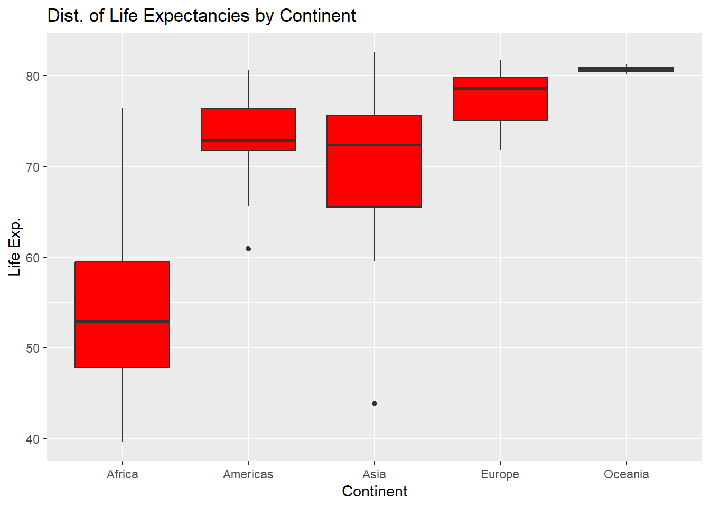
As we can see, countries in Oceania region have long life expectancies with little variation. Comparing the Americas to Asia, the median life expectancies are similar, but the spread is larger in Asia.
2.4.1.2 Violin Plots
Violin plots are alternative to boxplots. Here’s how it’s done:
ggplot(Data,aes(x=continent,y=lifeExp))+
geom_violin(fill="purple")+
labs(x="Continent",y="Life Exp.",title = "Dist. of Life Expectancies by Continent")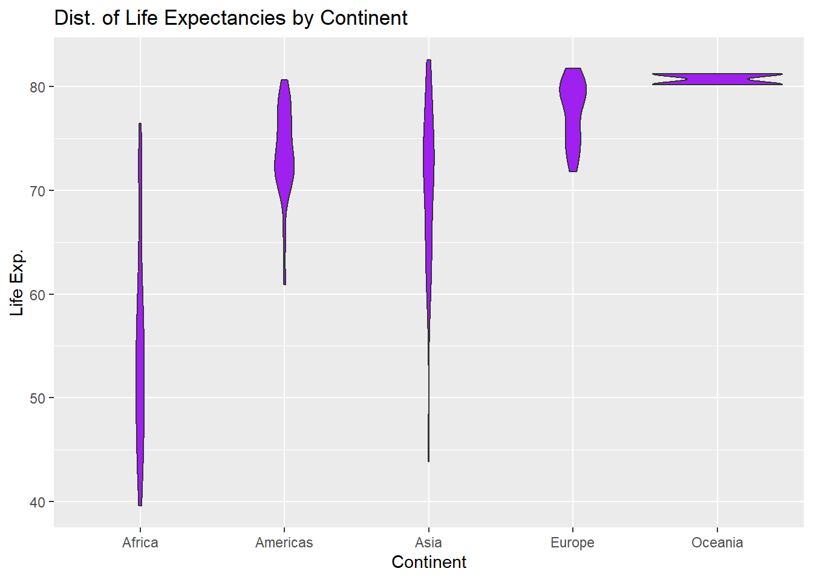
The width of the violin informs us which values are more commonly occurring. For example, look at Europe: violin is wider at high life expectancies, so longer life expectancies are more common in European countries.
2.4.2 Summarizing Two Categorical Variables
create new binary variable called expectancy, which will be denoted as low if the life expectancy is less than 70 years, high otherwise:
2.4.2.1 Two-Way Tables
See how expectancy varies across the continents. Two-way table can be created to produce counts when two categorical variables are involved.
Data<-Data %>%
mutate(expectancy=expectancy %>%
fct_relevel(c("Low","High")))
mytab2<-table(Data$continent,Data$expectancy)
mytab2##
## Low High
## Africa 45 7
## Americas 3 22
## Asia 11 22
## Europe 0 30
## Oceania 0 2First variable in table() will be placed in the rows, second will be columns.
From this table, we can see that 22 countries in the Americas have high life expectancies, and only 3 with low life expectancies.
If interested in proportions, rather than counts, convert using prop.table():
##
## Low High
## Africa 86.54 13.46
## Americas 12.00 88.00
## Asia 33.33 66.67
## Europe 0.00 100.00
## Oceania 0.00 100.00Here, the second argument to prop.table() indicates that the rows should add up to 1, if instead we want the columns to add to 1, we should set the second argument to 2.
2.4.2.2 Stacked Bar Charts
A stacked bar chart can be used to display relationship between binary variable expectancy across continents.
ggplot(Data,aes(x=continent,fill=expectancy))+
geom_bar(position = "stack")+
labs(x="Continent", y="Count", title="Life Expectancies by Continent")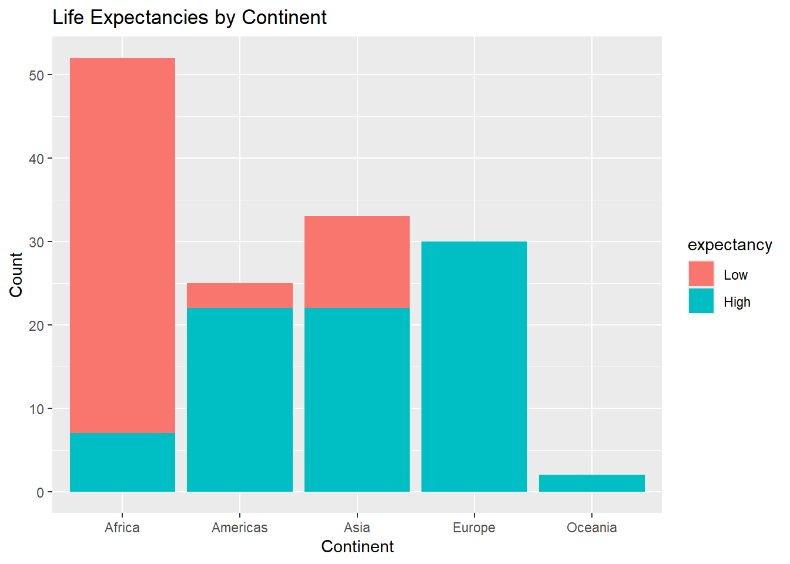
Shows how many countries exist in each continent and how many of these have high or low life expectancies. About 25 countries in the Americas, where the majority have high life expectancies.
Can change the way the bar chart is displayed by changing position in geom_bar() to position = dodge or position = fill, the latter being more useful for proportions instead of counts:
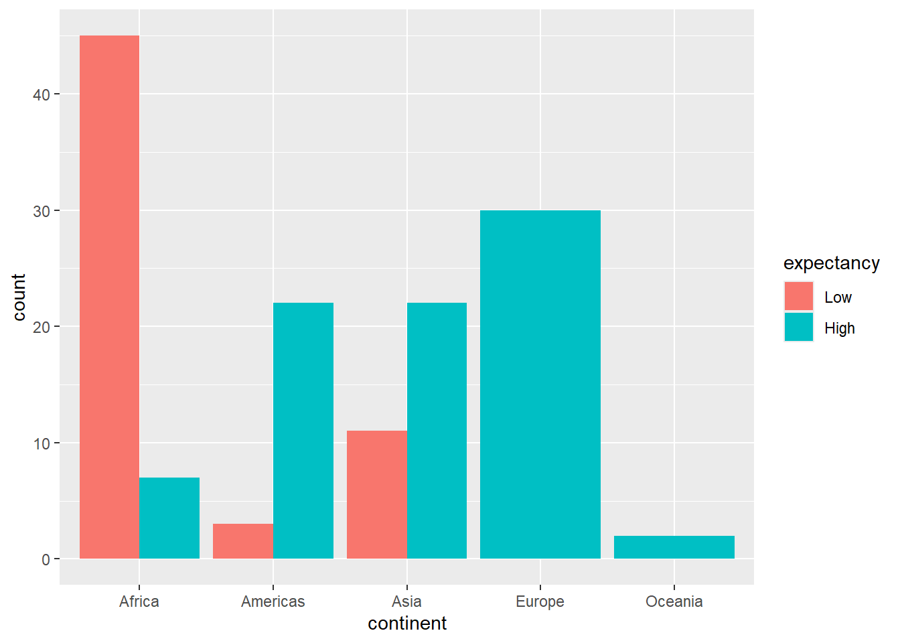
ggplot(Data, aes(x=continent, fill=expectancy))+
geom_bar(position = "fill")+
labs(x="Continent", y="Proportion",
title="Proportion of Life Expectancies by Continent")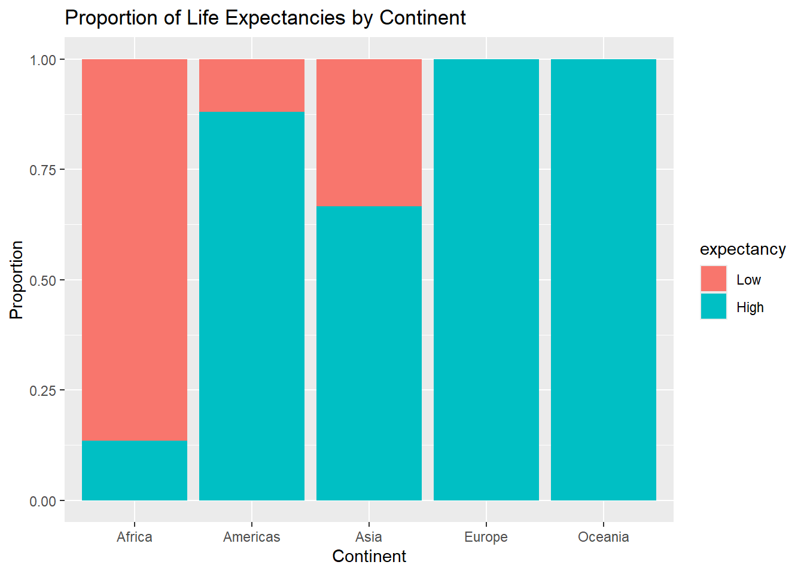
2.4.3 Summarizing Two Quantitative Variables
2.4.3.1 Scatterplots
Scatterplots are pretty standard for two quantitative variables
Let’s see life expectancy vs GDP per capita
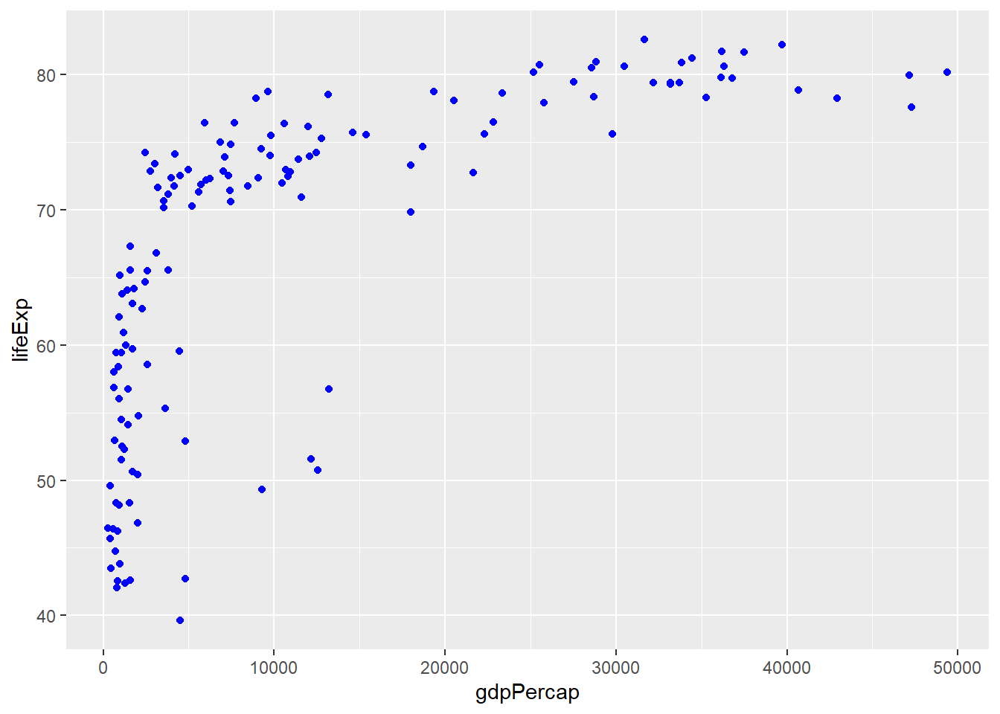
A curved relationship between lifeExp and GDP per cap is clearly visible here. Countries with higher GDP tend to have longer life expectancy.
Since some observations may overlap, we may want to add a transparency scale called alpha=0.2 inside geom_point():
ggplot(Data, aes(x=gdpPercap,y=lifeExp))+
geom_point(alpha=0.5)+
labs(x="GDP", y="Life Exp",
title="Scatterplot of Life Exp against GDP")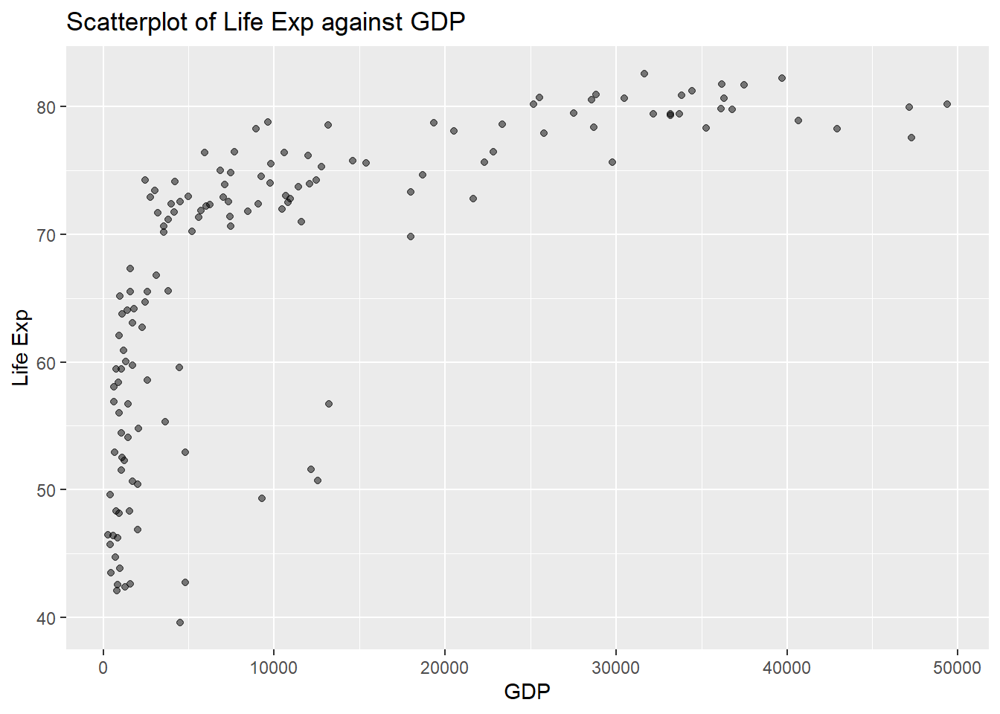
Default value for alpha is 1, which means the points are not at all transparent. Closer to 0 means more transparent. Darker points indicate more observations with those values on both variables. Can see hot spots easily.
2.5 Multivariate Visualizations
Multivariate Visualizations explore the relationship between multiple (more than two) variables.
2.5.1 Bar Charts
Let’s do a multivariate bar chart; suppose we want to compare life expectancy between continents, throughout the years.
Data.all<-gapminder %>%
mutate(expectancy=ifelse(lifeExp<70,"Low","High"))
ggplot(Data.all,aes(x=continent,fill=expectancy))+
geom_bar(position="fill")+
facet_wrap(~year)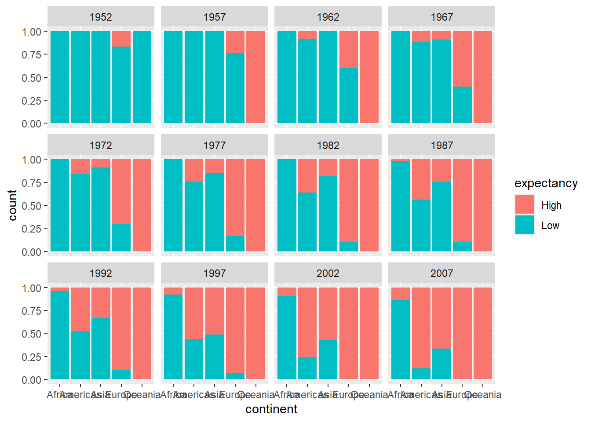
Note that three categorical values are summarized in this bar chart. How should we improve this bar chart?
- We could rotate the labels on the x-axis:
Data.all<-gapminder %>%
mutate(expectancy=ifelse(lifeExp<70,"Low","High"))
ggplot(Data.all,aes(x=continent,fill=expectancy))+
geom_bar(position="fill")+
facet_wrap(~year)+
theme(axis.text.x = element_text(angle=90))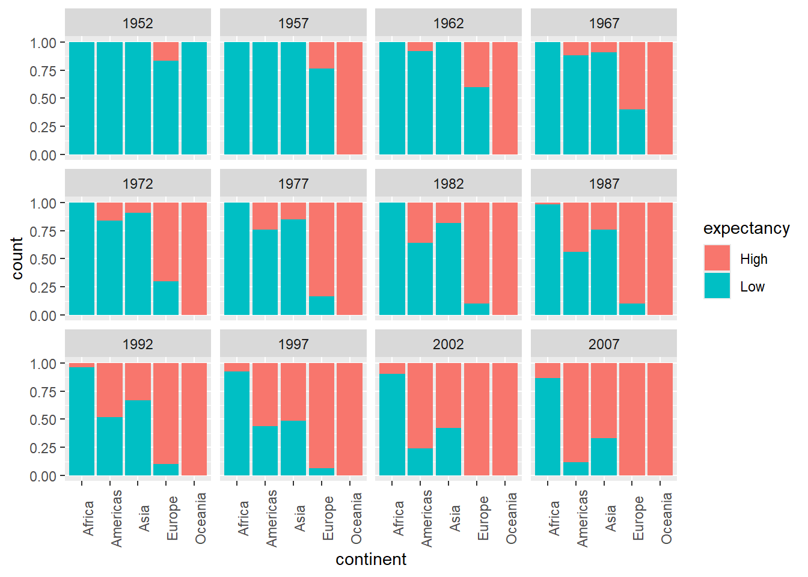
2.5.2 Scatterplots
Let’s do a multivariate scatterplot, like the one earlier - life expectancy vs GDP per capita - but make the size of the plots denote the population of the countries. This is supplied via size in aes():
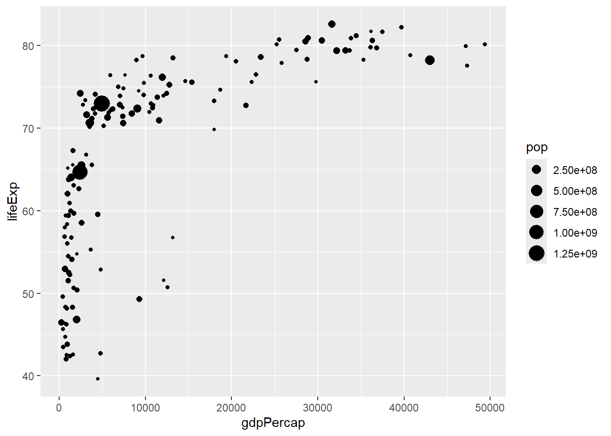
We can adjust the size of the plots by adding a layer scale_size():
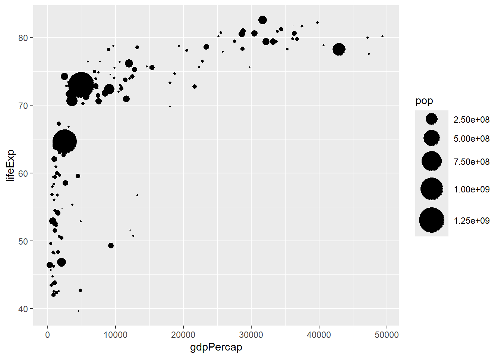
We can use different-colored plots to denote which continent each point belongs to:
ggplot(Data,aes(x=gdpPercap,y=lifeExp,size=pop,color=continent))+
geom_point()+
scale_size(range=c(0.1,12))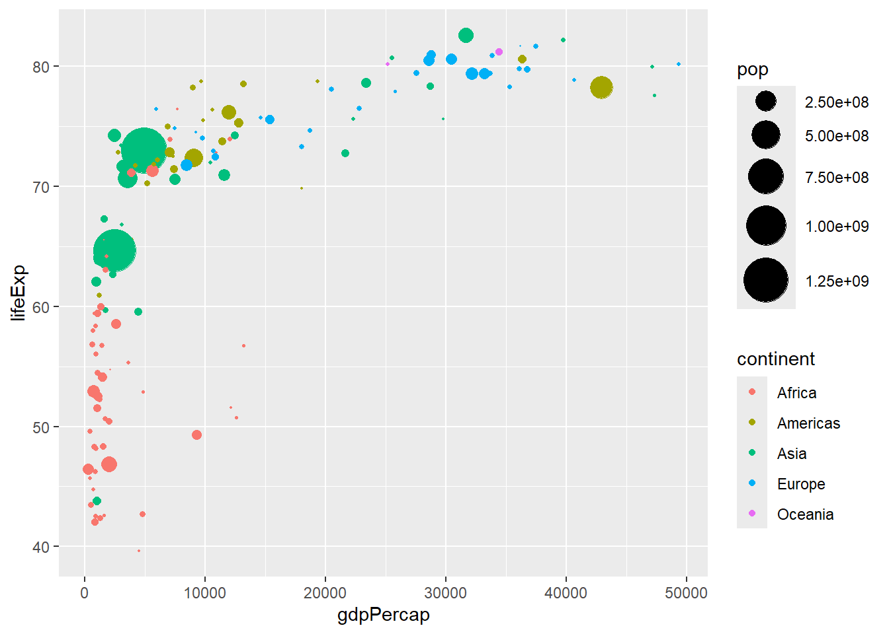
This summarizes three quantitative variables and one categorical variables.
Finally, we can adjust the plots by changing its shape and making it more translucent via shape and alpha in aes():
ggplot(Data,aes(x=gdpPercap,y=lifeExp,size = pop,fill = continent))+
geom_point(shape=21,alpha=0.5)+
scale_size(range=c(0.1,12))+
labs(x="GDP", y="Life Exp", title="Scatterplot of Life Exp against GDP")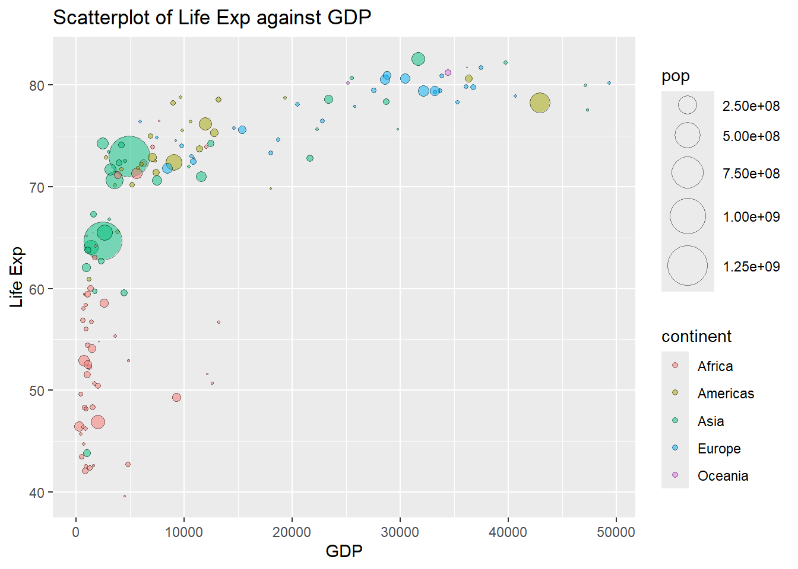